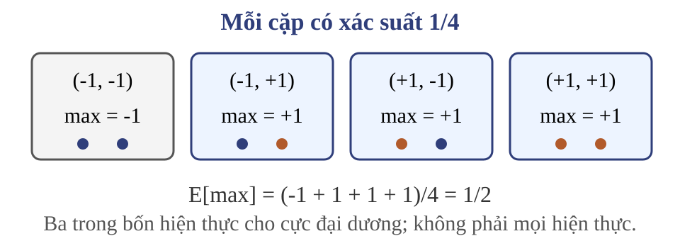
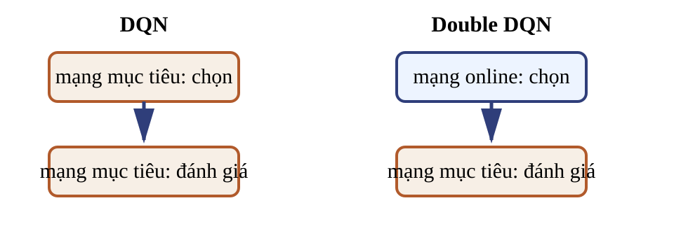
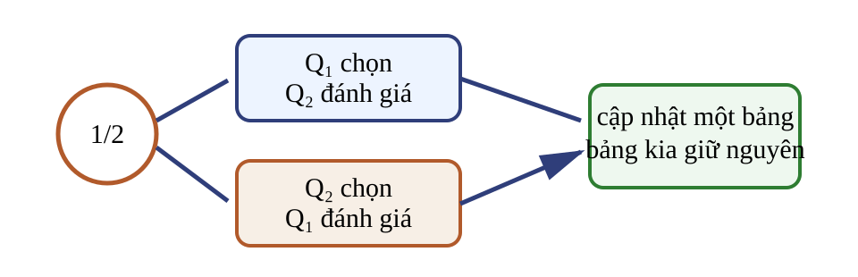
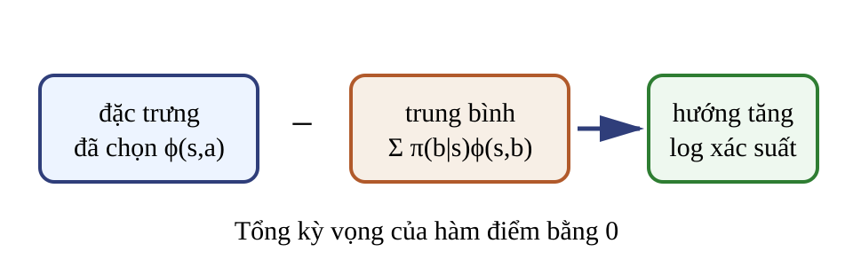
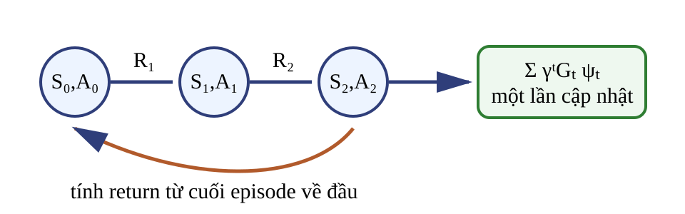

Phép cực đại chọn cả giá trị lẫn nhiễu (maximization bias) 
Viết $\widehat Q_a=Q_a+\varepsilon_a$ với $\mathbb E[\varepsilon_a]=0$. Không chệch theo từng hành động chưa bảo đảm $\max_a\widehat Q_a$ không chệch.
Ví dụ Rademacher Hai hành động có giá trị thật bằng 0. Nhiễu $\varepsilon_1,\varepsilon_2$ độc lập và nhận $-1$ hoặc $1$ với xác suất $1/2$.
Từng ước lượng $$\mathbb E[\widehat Q_1]=\mathbb E[\widehat Q_2]=0.$$
Sau phép cực đại $$\mathbb E[\max_a\widehat Q_a]=\tfrac12.$$
Bất đẳng thức kỳ vọng $$\mathbb E\!\left[\max_a \widehat Q_a\right]\ge \max_a\mathbb E[\widehat Q_a].$$
Đây là Jensen vì hàm cực đại theo véc-tơ là hàm lồi. Dấu nghiêm phụ thuộc phân phối và quan hệ giữa các ước lượng. Nếu một hành động luôn thắng, hai vế có thể bằng nhau. Double DQN tách chọn và đánh giá 
$$a_i^*=\arg\max_{a\in\mathcal A}Q_\theta(S'_i,a),$$ $$y_i=\begin{cases}R_i,&Z_i=1,\\R_i+\gamma\operatorname{sg}\!\left(Q_{\theta^-}(S'_i,a_i^*)\right),&Z_i=0.\end{cases}$$
$Z_i\in\{0,1\}$ là cờ kết thúc: chỉ tính $a_i^*$ khi $Z_i=0$. Hàm $\operatorname{sg}(u)=u$ ở lượt thuận và có đạo hàm bằng $0$.
Hai đích có thể khác nhau Cho $r=1$, $\gamma=0{,}9$, $Z=0$, $Q_{\theta^-}(s',\cdot)=(5,4)$ và $Q_\theta(s',\cdot)=(3,6)$.
thuật toán chọn đánh giá đích DQN target: hành động 1 $5$ $5{,}5$ Double DQN online: hành động 2 $4$ $4{,}6$
Bài tập: sai lệch và hai đích Liệt kê bốn cặp Rademacher và kiểm kết quả $1/2$. Với $r=1$, $\gamma=0{,}8$, $Z=0$, $Q_{\theta^-}(s',\cdot)=(2,7)$ và $Q_\theta(s',\cdot)=(4,1)$, tính đích DQN và Double DQN. $y^{\mathrm{DQN}}=1+0{,}8\cdot7=6{,}6$; online chọn hành động 1 nên $y^{\mathrm{DDQN}}=1+0{,}8\cdot2=2{,}6$.
Miền, kích thước và đường gradient $Q_\theta:\mathcal S\times\mathcal A\to\mathbb R$, $|\mathcal A|=m$; với lô $b$ mẫu, $Q_\theta(S_i,\cdot)\in\mathbb R^m$, $(R,y)\in\mathbb R^b$ và $Z\in\{0,1\}^b$.
$$L_B(\theta)=\frac1b\sum_{i=1}^{b}\left[\operatorname{sg}(y_i)-Q_\theta(S_i,A_i)\right]^2.$$
Gradient chỉ đi qua $Q_\theta(S_i,A_i)$; đích và mạng mục tiêu không nhận gradient.
Z là cờ Boolean, không phải đại lượng thực tùy ý. A_i là chỉ số hành động trong tập có m phần tử; phép gather lấy một giá trị trên mỗi hàng. Double DQN chỉ thay công thức bootstrap, không thay hướng gradient của loss. `sg` là bảo vệ cài đặt: chặn gradient đi vào đích và mạng mục tiêu. Ví dụ toán đánh số hành động từ 1; chỉ số tensor trong mã có thể bắt đầu từ 0, cần đối chiếu khi chuyển từ công thức sang cài đặt.Nguồn: tr. 15–19; bổ sung miền, kích thước và đường gradient.
Hai mạng vẫn có tương quan $\theta^-$ là bản sao trễ của $\theta$, nên hai sai số đánh giá không độc lập. Tách chọn–đánh giá thường giảm sai lệch cực đại; không buộc sai lệch bằng 0. Replay, mạng mục tiêu và Double DQN xử lý các cơ chế khác nhau. Kết luận cần dựa trên nhiều lần chạy và thước đo đánh giá, không chỉ loss huấn luyện.
Double Q-learning dùng hai bảng riêng 
Chính sách hành vi có thể dựa trên $Q_1+Q_2$. Mỗi bước chỉ cập nhật một bảng; bảng còn lại đánh giá hành động do bảng thứ nhất chọn.
Cập nhật chéo theo trạng thái kết thúc Với xác suất $1/2$, cập nhật bảng thứ nhất:
$$a^*=\arg\max_{a\in\mathcal A}Q_1(S',a),\qquad Z=0,$$ $$y_1=\begin{cases}R,&Z=1,\\R+\gamma Q_2(S',a^*),&Z=0,\end{cases}$$ $$Q_1(S,A)\leftarrow Q_1(S,A)+\alpha[y_1-Q_1(S,A)].$$
Chỉ tính $a^*$ khi $Z=0$. Nhánh còn lại hoán đổi $Q_1,Q_2$.
Áp dụng cập nhật chéo Cho $Q_1(S,A)=4$, $\alpha=0{,}1$, $R=1$, $\gamma=0{,}9$, $Z=0$. Tại $S'$, $Q_1=(2,1)$ và $Q_2=(1,4)$.
$$a^*=1,\qquad y_1=1+0{,}9(1)=1{,}9,$$ $$Q_1^{\mathrm{new}}(S,A)=4+0{,}1(1{,}9-4)=3{,}79.$$
Hai cách tách không đồng nhất Double Q-learning Double DQN biểu diễn hai bảng $Q_1,Q_2$ online $Q_\theta$, target $Q_{\theta^-}$ cập nhật chọn ngẫu nhiên một bảng luôn cập nhật online đánh giá bảng còn lại bản sao trễ dữ liệu thường trực tuyến thường từ replay
Kiểm tra phần học giá trị Câu hỏi: biến nào chọn hành động trong Double DQN?Câu hỏi: điều gì xảy ra với bootstrap khi $Z=1$?Câu hỏi: vì sao hai mạng DQN không độc lập?Câu hỏi: Double Q-learning cập nhật mấy bảng trong một bước?
Mục tiêu episodic và chỉ số quỹ đạo Cho $S_0\sim\rho_0$, $A_t\sim\pi_\theta(\cdot\mid S_t)$, $R_{t+1}$ nhận sau $A_t$, $0\le\gamma<1$ và $T<\infty$ gần như chắc chắn:
$$G_t=\sum_{k=t}^{T-1}\gamma^{k-t}R_{k+1},\qquad J(\theta)=\mathbb E_{\tau\sim p_\theta}[G_0].$$
Sau $T$, nối một trạng thái hấp thụ có phần thưởng và giá trị bằng $0$. Trọng số $\gamma^t$ sẽ trở lại trong định lý và REINFORCE.
Miền gamma này cũng được dùng khi định nghĩa phân bố chiếm dụng. Quy ước nối hấp thụ cho phép dùng tổng vô hạn mà không đổi mục tiêu episodic: mọi phần thưởng sau T bằng không và Q tại trạng thái hấp thụ bằng không.Nguồn: tr. 30–32, 39–40; sửa chỉ số và làm rõ phần tiếp diễn.
Tối ưu trực tiếp tham số chính sách $$\theta\leftarrow\theta+\alpha\,\widehat g,\qquad \widehat g\approx\nabla_\theta J(\theta),\quad \alpha>0.$$
Mục tiêu Tăng return kỳ vọng từ phân phối trạng thái khởi đầu.
Ước lượng Dùng đạo hàm log xác suất của hành động đã lấy mẫu.
Hợp đồng cho đạo hàm theo chính sách $\rho_0$ và động lực $P$ không phụ thuộc $\theta$. $\pi_\theta$ khả vi, có miền hỗ trợ cố định và dương tại hành động được lấy mẫu. $G_0\nabla_\theta\log p_\theta(\tau)$ khả tích; có điều kiện cho phép đổi đạo hàm với tích phân. $S_t$ là trạng thái Markov; sau kết thúc dùng tiếp diễn hấp thụ. Hàm điểm (score function) cần xác suất dương trên mẫu Với hành động đã lấy mẫu và $\pi_\theta(a\mid s)>0$:
$$\psi_\theta(s,a)=\nabla_\theta\log\pi_\theta(a\mid s),\qquad \nabla_\theta\pi_\theta(a\mid s)=\pi_\theta(a\mid s)\psi_\theta(s,a).$$
Nếu miền hỗ trợ thay đổi theo $\theta$, phép đổi đạo hàm và tích phân cần điều kiện bổ sung.
Hàm điểm của softmax 
$\phi(s,a),\theta\in\mathbb R^d$; đặc trưng $\phi$ được giữ cố định khi lấy đạo hàm theo $\theta$. Logit $z_a(s)=\phi(s,a)^\top\theta$.
$$\pi_\theta(a\mid s)=\frac{e^{\phi(s,a)^\top\theta}}{\sum_b e^{\phi(s,b)^\top\theta}},\quad \psi_\theta(s,a)=\phi(s,a)-\sum_b\pi_\theta(b\mid s)\phi(s,b).$$
Tích phi chuyển vị theta là logit vô hướng. Kỳ vọng có điều kiện của hàm điểm dưới chính sách bằng véc-tơ $0\in\mathbb R^d$. Nếu phi cũng có tham số học, công thức phải dùng quy tắc dây chuyền đầy đủ.Nguồn: tr. 35–36; viết đầy đủ chuẩn hóa, kích thước và đại lượng cố định.
Ví dụ softmax hai hành động Cho $\pi_\theta(1\mid s)=2/3$, $\pi_\theta(2\mid s)=1/3$, $\phi(s,1)=(1,0)$ và $\phi(s,2)=(0,1)$.
$$\psi_\theta(s,1)=(1,0)-\left(\tfrac23,\tfrac13\right)=\left(\tfrac13,-\tfrac13\right).$$
Câu hỏi: tổng có trọng số của hai hàm điểm bằng bao nhiêu?
Kỳ vọng có trọng số bằng $0\in\mathbb R^d$.
Bài tập: hai hàm điểm Với ví dụ softmax, tính $\psi(s,2)$ và kiểm $\mathbb E_{A\sim\pi}[\psi(s,A)]=0$. Với Gaussian, đổi thành $a=-1$, giữ $\phi=(1,2)$, $\mu=0$, $\sigma^2=1$. Tính hàm điểm. Softmax: $(-2/3,2/3)$ và kỳ vọng bằng $(0,0)$. Gaussian: $(-1,-2)$.
Hàm điểm Gaussian, phương sai cố định Với $\phi(s),\theta\in\mathbb R^d$, giữ $\phi$ và $\sigma^2>0$ cố định, $A\mid S=s\sim\mathcal N(\mu_\theta(s),\sigma^2)$ và $\mu_\theta(s)=\phi(s)^\top\theta$:
$$\psi_\theta(s,a)=\frac{a-\mu_\theta(s)}{\sigma^2}\,\phi(s)\in\mathbb R^d.$$
Hành động lớn hơn trung bình cho phần dư dương. Phương sai nhỏ khuếch đại độ lớn hàm điểm. Công thức chỉ là gradient theo tham số trung bình. Nếu phi hoặc sigma phụ thuộc theta thì cần đạo hàm thêm theo quy tắc dây chuyền.Nguồn: tr. 37–38; bổ sung công thức, kích thước và đại lượng cố định.
Ví dụ hàm điểm Gaussian Cho $\phi(s)=(1,2)$, $\theta=(0,0)$ nên $\mu=0$, $\sigma^2=1$ và $a=1{,}5$.
$$\psi_\theta(s,a)=\frac{1{,}5-0}{1}(1,2)=(1{,}5,3).$$
Câu hỏi: nếu hệ số return âm, bước gradient dịch trung bình theo hướng nào?
Return âm đảo hướng hàm điểm và làm giảm trung bình theo hướng hành động mẫu.
Tỷ số xác suất biến return thành gradient (likelihood ratio) $$J(\theta)=\int G_0(\tau)\,p_\theta(\tau)\,\mathrm d\tau,$$ $$\begin{aligned}\nabla_\theta J(\theta)&=\int G_0(\tau)\nabla_\theta p_\theta(\tau)\,\mathrm d\tau\\&=\mathbb E_{\tau\sim p_\theta}\!\left[G_0\nabla_\theta\log p_\theta(\tau)\right].\end{aligned}$$
Phân tích xác suất quỹ đạo Khai triển $\nabla_\theta\log p_\theta(\tau)$ theo các bước của quỹ đạo:
$$p_\theta(\tau)=\rho_0(s_0)\prod_{t=0}^{T-1}\pi_\theta(a_t\mid s_t)P(s_{t+1},r_{t+1}\mid s_t,a_t),$$ $$\nabla_\theta\log p_\theta(\tau)=\sum_{t=0}^{T-1}\psi_\theta(s_t,a_t).$$
Điều kiện theo lịch sử loại phần thưởng quá khứ Đặt $H_t=(S_0,A_0,R_1,\ldots,A_{t-1},R_t,S_t)$. Không cần giả sử các phần thưởng độc lập với hành động.
$$\mathbb E_{A_t\sim\pi_\theta(\cdot\mid S_t)}[\psi_t\mid H_t]=\nabla_\theta\!\int_{\mathcal A}\pi_\theta(a\mid S_t)\,\mathrm da=0,$$ $$\mathbb E\!\left[G_0\sum_t\psi_t\right]=\mathbb E\!\left[\sum_t\gamma^tG_t\psi_t\right].$$
Với $G_{<t}=\sum_{k=0}^{t-1}\gamma^kR_{k+1}$ đo được theo $H_t$, ta có $G_0=G_{<t}+\gamma^tG_t$ và $\mathbb E[G_{<t}\psi_t]=0$.
REINFORCE: thu rồi cập nhật 
$$\widehat g=\sum_{t=0}^{T-1}\gamma^tG_t\,\psi_{\theta_{\mathrm{old}}}(S_t,A_t),\qquad \theta\leftarrow\theta_{\mathrm{old}}+\alpha\widehat g.$$
Thu cả episode dưới $\pi_{\theta_{\mathrm{old}}}$; giữ $\theta_{\mathrm{old}}$ cố định đến khi cộng xong.
Áp dụng REINFORCE cho softmax Dùng lại $\phi(s,1)=(1,0)$, $\phi(s,2)=(0,1)$ và $\theta=(\log2,0)$, nên $\pi_\theta(1\mid s)=2/3$. Một episode một bước chọn hành động 1, nhận $G_0=3$; $\alpha=0{,}1$.
$$\widehat g=3\left(\tfrac13,-\tfrac13\right)=(1,-1),\qquad \theta_{\mathrm{new}}=(\log2+0{,}1,-0{,}1),$$ $$\pi_{\theta_{\mathrm{new}}}(1\mid s)=\frac{2e^{0{,}1}}{2e^{0{,}1}+e^{-0{,}1}}\approx0{,}710>\tfrac23.$$
Ứng dụng dùng lại cùng đặc trưng và hàm điểm softmax. Return dương tăng chênh lệch logit giữa hành động một và hai thêm 0,2, nên xác suất hành động đã nhận return dương tăng. Đây là một cập nhật mẫu, không bảo đảm từng episode đều cải thiện J.Nguồn: ví dụ tính từ tr. 35–36, 39–40.
Bài tập: kiểm cập nhật chính sách Giữ dữ kiện của ví dụ softmax trước đó nhưng đặt $G_0=-3$. Tính $\theta_{\mathrm{new}}$ và $\pi_{\theta_{\mathrm{new}}}(1\mid s)$. Episode hai bước với $R_1=1$, $R_2=2$, $\gamma=0{,}9$: tính $G_0$ và $G_1$. Nêu tham số phải giữ cố định trong khi thu một episode nhiều bước. $\theta_{\mathrm{new}}=(\log2-0{,}1,0{,}1)$, $\pi_{\mathrm{new}}(1\mid s)\approx0{,}621$; $G_0=2{,}8$, $G_1=2$; giữ $\theta_{\mathrm{old}}$ cố định.
Phần một kiểm cả tham số lẫn xác suất khi return âm: xác suất hành động 1 giảm xuống khoảng 0,621. Phần hai kiểm chỉ số return hai bước. Phần ba giữ hợp đồng lấy mẫu của REINFORCE episodic.Nguồn: bài tập từ tr. 35–36, 40.
Mở rộng: phân bố chiếm dụng (occupancy measure) $Q^\pi(s,a)=\mathbb E_\pi[G_t\mid S_t=s,A_t=a]$. Nếu chân trời cưỡng bức phụ thuộc $t$, ghép $t$ vào trạng thái; trạng thái hấp thụ có $Q^\pi=0$. Trực giác: trọng số $\gamma^t$ tạo phân bố lượt thăm — lượt thăm muộn được tính ít hơn.
$$d_{\rho_0,\gamma}^{\pi}(s)=(1-\gamma)\sum_{t\ge0}\gamma^t\Pr_\pi(S_t=s),$$ $$\mathbb E\!\left[\sum_{t\ge0}\gamma^tG_t\psi_t\right]=\frac1{1-\gamma}\mathbb E_{S\sim d^{\pi},A\sim\pi}\!\left[Q^\pi(S,A)\psi_\theta(S,A)\right]=\nabla_\theta J(\theta).$$
Đọc thêm: sai phân hữu hạn $$\frac{\partial J(\theta)}{\partial\theta_k}\approx
\frac{J(\theta+\epsilon u_k)-J(\theta)}{\epsilon},$$
Ưu điểm Không cần đạo hàm giải tích.
Giới hạn Nhiễu và cần nhiều lượt đánh giá khi số tham số lớn.
Đây là đọc thêm ngoài tuyến chính, có thể lược. Từ định nghĩa đạo hàm, xấp xỉ từng thành phần với u_k là véc-tơ đơn vị hướng k. Nối từ hai cách viết gradient của bài sang cầu nối Bài 10: tuyến chính dùng hàm điểm thay vì sai phân hữu hạn.Nguồn: tr. 33.
Bốn hợp đồng cần giữ Sai lệch cực đại Thu hồi bất đẳng thức Jensen; kết luận là về kỳ vọng, không về từng lần lấy max.
Double DQN Online chọn; target đánh giá; kết thúc che bootstrap; đích dừng gradient.
Chính sách Phân phối đúng miền hành động; hàm điểm chỉ dùng nơi mật độ dương.
REINFORCE Chỉ số return nhất quán; thu dưới tham số cũ; cộng rồi cập nhật một lần.
Double DQN giảm liên hệ giữa nhiễu chọn và nhiễu đánh giá của phép max. Bài kế tiếp dùng baseline và actor–critic để giảm phương sai và bootstrap giá trị.